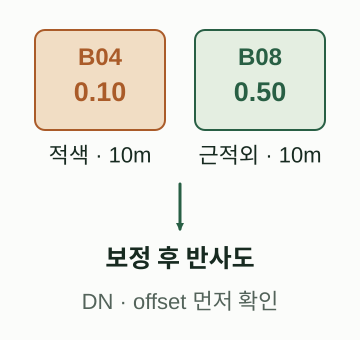
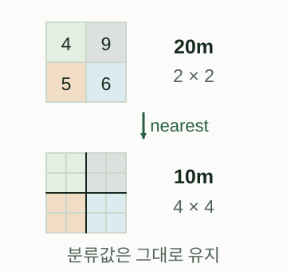
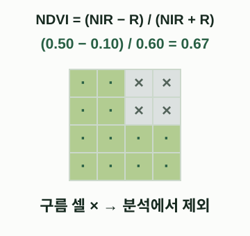

PART 06 / CHAPTER 21
21 · 밴드·SCL·반사도 보정·정렬
정수 밴드값을 반사도로 바꾸고 구름 분류와 분석 격자를 맞춥니다.
이 페이지에서
학습 목표: 정수 밴드값을 반사도로 바꾸고 구름 분류와 분석 격자를 맞춥니다.
준비: 실행 환경 · 도구와 용어. 예제 자료는 별도 표시가 없는 한 합성 자료입니다.
개념
위성 파일의 정수 DN(Digital Number)은 항상 반사도 그 자체가 아닙니다. 제품 메타데이터의 QUANTIFICATION_VALUE와 밴드별 ADD_OFFSET으로 반사도를 복원할 수 있으며, 이미 보정된 서비스 결과에 같은 보정을 다시 적용하면 틀립니다. SCL(Scene Classification Layer)은 구름·그림자·식생·물 등을 구분하는 범주 래스터입니다.
B04/B08과 SCL의 기본 해상도가 다를 수 있으므로 SCL을 기준 밴드 격자로 nearest 방식으로 맞춥니다. 보간된 범주 번호를 새로운 의미로 해석하면 안 됩니다.
밴드 두 장과 구름 분류를 함께 읽습니다
01 · 반사도 준비

예시 숫자는 실제 관측값이 아닙니다. 원본 DN이면 제품 메타데이터의 scale·offset을 확인하고, 이미 보정된 값에는 중복 적용하지 않습니다.
그림 크게 보기 ↗02 · SCL 격자 맞추기

4=식생, 9=고확률 구름, 5=비식생, 6=물입니다. 격자 원점·CRS·범위가 맞는 단순 예이며, 실제 작업은 기준 밴드의 transform에 정렬합니다.
그림 크게 보기 ↗03 · 유효한 셀만 계산

초록색은 여기서 남긴 유효 셀, ×는 제외 셀입니다. 색과 NDVI만으로 수종이나 건강 상태가 확정되는 것은 아닙니다.
그림 크게 보기 ↗같은 범위를 가정한 합성 2×2/4×4 격자입니다. 분류 마스크는 범주를 유지하며, 연속값 밴드의 보간 방식과 구별합니다. SCL의 단순 표기는 아래 본문·공식 문서를 함께 읽으세요.
직접 제작한 교육용 개념도 · 설명 근거: Sentinel-2 처리·SCL · Sentinel-2 제품·밴드
왜 필요한가
NDVI 공식이 간단해도 입력값 보정과 구름 제외가 틀리면 결과가 왜곡됩니다. 날짜 간 비교에서는 처리 기준선, 보정 단계와 유효한 셀의 수를 함께 기록합니다.
핵심 API
NumPy astype('float32'), np.isin, np.where로 보정과 마스킹을 표현합니다. 실제 영상은 rasterio.warp.reproject(..., resampling=Resampling.nearest)로 SCL을 정렬합니다. 아래 offset=-1000은 계산을 설명하기 위한 가정값이며 실제 파일에서 읽어야 합니다.
최소 실행 예제
import numpy as np
red_dn = np.array([2000, 3000, 4000], dtype="float32")
nir_dn = np.array([5000, 5000, 5000], dtype="float32")
scl = np.array([4, 9, 6], dtype="uint8")
quantification = 10000.0
example_offset = -1000.0
red = (red_dn + example_offset) / quantification
nir = (nir_dn + example_offset) / quantification
valid = np.isin(scl, [4, 5, 6]) & ((nir + red) != 0)
index = np.full(red.shape, np.nan, dtype="float32")
np.divide(nir-red, nir+red, out=index, where=valid)
assert np.isclose(index[0], 0.6)
assert np.isnan(index[1])
print(index)
조경·도시 실무 예제
합성 세 셀 중 구름 분류 9인 두 번째 셀은 제외됩니다. 물을 분석에 포함할지, 그림자·불확실 셀을 어떻게 다룰지는 목적에 맞게 정합니다. 22장에서는 같은 계산을 GeoTIFF 입출력과 연결합니다.
시각화와 결과 읽기
보정 전 DN, 보정 후 반사도, 유효 셀 마스크, NDVI를 각각 확인하세요. 결측값을 초록색이나 0값으로 칠하지 않습니다.
흔한 오류
DN=0 같은 제품의 특수값을 먼저 확인하세요. 음의 반사도를 무조건 0으로 잘라버리면 통계가 달라집니다. SCL은 정답 식생지도나 정밀 토지피복 라벨이 아닙니다.
연습문제
offset=0으로 계산한 NDVI와 비교하고, 공통 곱셈 계수와 공통 덧셈 offset이 비율식에 미치는 차이를 설명하세요.
전체 예제 내려받기 · 실행: python chapter21.py
다음 단계
22 · Sentinel-2A에서 시작하는 식생지수 분석로 이어집니다.
출처
Sentinel-2 처리, Sentinel-2 제품과 보정, Rasterio resampling. 확인 2026-09-30.